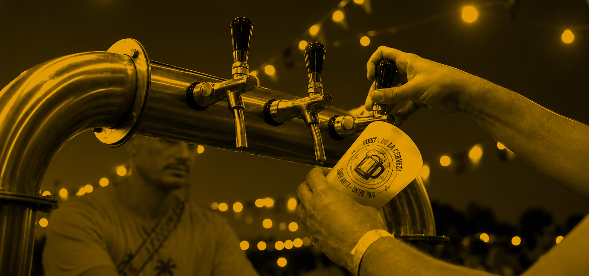

9 DE ENERO DE 2027

VUELVE LA FIESTA

Un evento que combinará artistas con variada gastronomía, paseo emprendedor, actividades para niños y diferentes atractivos durante el día. El evento contará también con la presencia de cerveceros artesanales de la región. El público podrá disfrutar de una destacada grilla artística en una velada que combinará música en vivo y tradición cervecera.
¡Vuelve por 3er año consecutivo una fiesta bien Alemana!
SPÍRITU SOLIDARIO

La venta de comidas y la cantina es a beneficio de las instituciones sin fines de lucro de nuestro pueblo, las cuales se unen para trabajar juntos en cada evento.
Con cada compra vas a estar ayudando al Hogar, a los Bomberos Voluntarios, al Centro Deportivo y a la comisión Fiesta de la Trilla. Además, el Paseo Emprendedor y el sector de juegos también son parte del trabajo conjunto que el municipio realiza con los emprendedores.